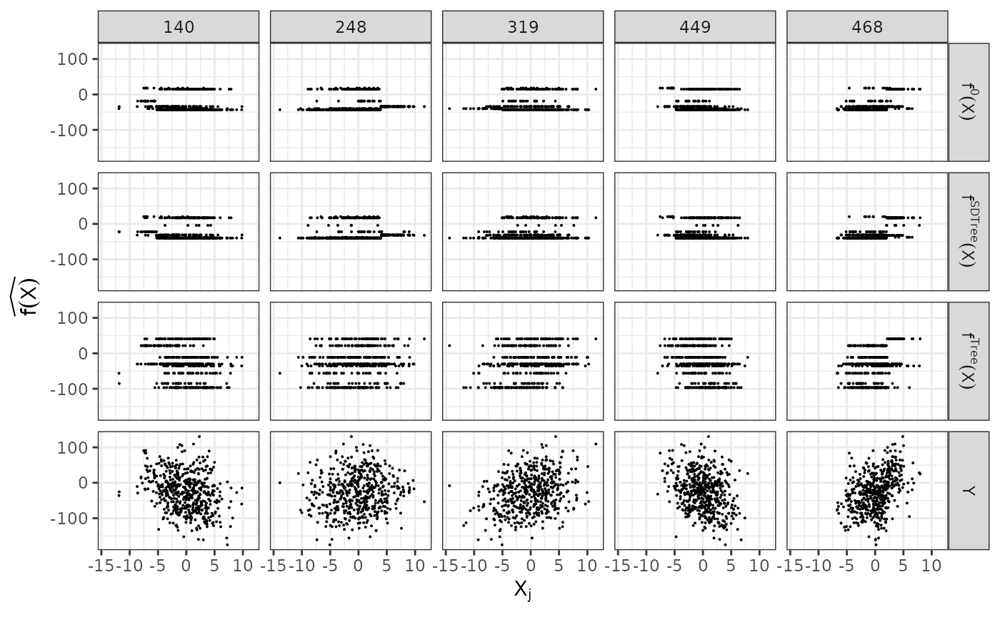
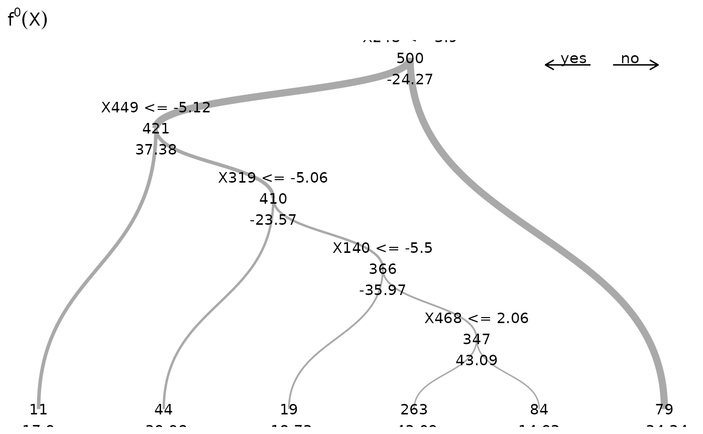
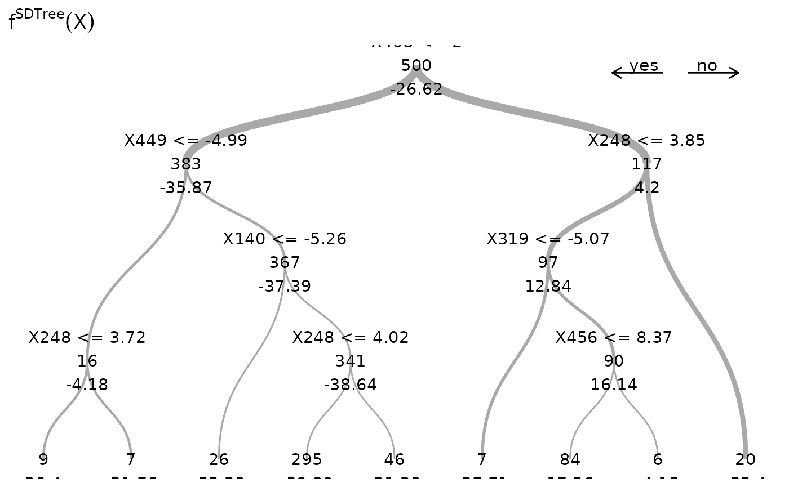
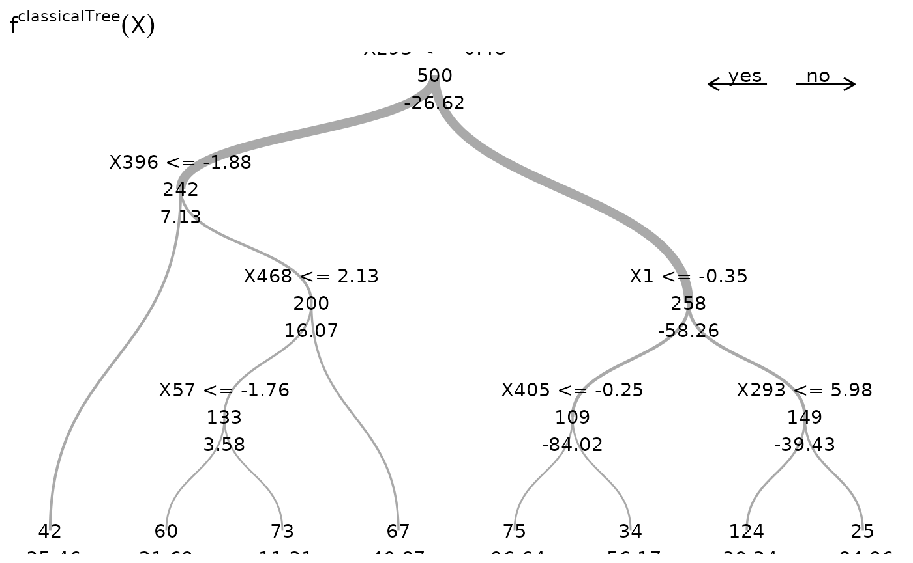

In the following, we compare the Spectrally Deconfounded Regression
Tree
to the classical regression tree
(Breiman et al. 2017) using simulated data
from a confounded process. We simulate the data with
simulate_data_step() with a random regression tree,
i.e. step-function for the direct relationship
.
library(SDModels)
set.seed(99)
# number of confounding covariates in H
q <- 15
# number of covariates in X
p <- 500
# number of observations
n <- 500
# number of random splits in the regression tree
m <- 5
dat <- simulate_data_step(q, p, n, m, make_tree = TRUE)Given the data, we can estimate both the SDTree and the classical
regression tree. For both, we choose the cost complexity parameter
cp by cross-validation.
# estimation of deconfounded regression tree
cpTable_dec <- cvSDTree(x = dat$X, y = dat$Y)
cp_opt_dec <- cpTable_dec$cp_min
dec_tree <- SDTree(x = dat$X, y = dat$Y, cp = cp_opt_dec)
# estimation of classical regression tree
cpTable_plain <- cvSDTree(x = dat$X, y = dat$Y, Q_type = 'no_deconfounding')
cp_opt_plain <- cpTable_plain$cp_min
plain_tree <- SDTree(x = dat$X, y = dat$Y, Q_type = 'no_deconfounding', cp = cp_opt_plain)Let us observe, what the different trees predict, by comparing the predictions to the true function and the observed response. On top, we show the underlying true step function against the 5 covariates used for splitting partitions. On the bottom, we see the observed response . The SDTree predicts almost the same response as the true underlying function. The plain classical regression tree, on the other hand, results in a prediction close to the observed .
library(tidyr)
library(ggplot2)
f_X_tree <- plain_tree$predictions
f_X_tree_deconfounded <- dec_tree$predictions
# gather results
results <- data.frame(Y = dat$Y, f_X = dat$f_X, f_X_tree = f_X_tree,
f_X_tree_deconfounded = f_X_tree_deconfounded)
X_j <- dat$X[, dat$j]
colnames(X_j) <- dat$j
results <- cbind(results, X_j)
results <- gather(results, key = "method", value = "pred", Y, f_X,
f_X_tree, f_X_tree_deconfounded)
results <- gather(results, key = 'j', value = 'X', -method, -pred)
results$method <- as.factor(results$method)
levels(results$method) <- c('f^0*(X)', 'f^Tree*(X)', 'f^SDTree*(X)', 'Y')
results$method <- factor(results$method, levels = c('f^0*(X)', 'f^SDTree*(X)',
'f^Tree*(X)', 'Y'))
gg_res <- ggplot(results, aes(x = X, y = pred)) +
geom_point(size = 0.05) +
facet_grid(method~j, labeller = label_parsed) +
theme_bw() +
labs(x = expression(X[j]), y = expression(widehat(f(X))))
gg_res
Now, we can directly look at the estimated trees. On top is the true underlying random regression tree, and below are the two estimated trees. In the middle is the SDTree and on the bottom is the plain classical regression tree. The SDTree uses all the causal parents of for the first few splits. In addition to a tree that results in a similar partition as the true causal function one of the leaves is split using the spurious covariate . The classical regression tree on the other hand uses no causal variable at all, but only spurious covariates. This might result in a more predictive estimation, but has no causal meaning and would predict completely wrong in interventional settings.
plot(dat$tree, main = expression({f^0} (X)))
plot(dec_tree, main = expression({f^SDTree} (X)))
plot(plain_tree, expression({f^classicalTree} (X)))